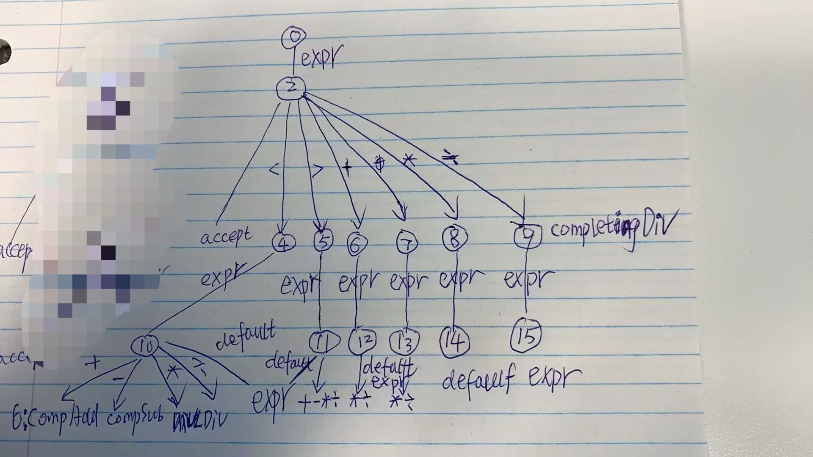

Grammar zxxu: better titled as Rules
0 $accept: expr $end zxxu: Note $accept is a Nonterminal meaning the valid Grammar and $end is a Terminal meaning yylex() returns 0 or a minus value
1 expr: expr '+' expr
2 | expr '-' expr
3 | expr '*' expr
4 | expr '/' expr
5 | expr '<' expr
6 | expr '>' expr
7 | NUMBER
Terminals, with rules where they appear
$end (0) 0 zxxu: $end has token code as 0, this is the reason why char token can't be \0
'*' (42) 3
'+' (43) 1
'-' (45) 2
'/' (47) 4
'<' (60) 5
'>' (62) 6
error (256)
NUMBER <str> (258) 7
Nonterminals, with rules where they appear
$accept (10)
on left: 0
expr (11)
on left: 1 2 3 4 5 6 7
on right: 0 1 2 3 4 5 6
State 0
0 $accept: • expr $end zxxu: the • here points to a NUMBER or an expr
NUMBER shift, and go to state 1 enter state 1; after shift, state 1 will expect a NUMBER at the stack top
expr go to state 2 processed an expr and we enter state 2
State 1 replace the NUMBER on stack top with expr
7 expr: NUMBER •
$default reduce using rule 7 (expr) The NUMBER is the last token to complete rule 7, we can reduce if can't shift(this is why the symbol is named as $default)
we can optimize off this state and remove the "NUMBER shift, and go to state 1" line of other states(such as from State 0)
State 2 S2__AccExpr_or_LaBinOp where La means lookahead
0 $accept: expr • $end
1 expr: expr • '+' expr
2 | expr • '-' expr
3 | expr • '*' expr
4 | expr • '/' expr
5 | expr • '<' expr
6 | expr • '>' expr
$end shift, and go to state 3
'<' shift, and go to state 4
'>' shift, and go to state 5
'+' shift, and go to state 6
'-' shift, and go to state 7
'*' shift, and go to state 8
'/' shift, and go to state 9
State 3 Enter this state to accept the Grammar
0 $accept: expr $end •
$default accept
State 4 S4__ComletingLtExpr where Lt means less than
5 expr: expr '<' • expr
NUMBER shift, and go to state 1
expr go to state 10
State 5
6 expr: expr '>' • expr
NUMBER shift, and go to state 1
expr go to state 11
State 6
1 expr: expr '+' • expr
NUMBER shift, and go to state 1
expr go to state 12
State 7
2 expr: expr '-' • expr
NUMBER shift, and go to state 1
expr go to state 13
State 8
3 expr: expr '*' • expr
NUMBER shift, and go to state 1
expr go to state 14
State 9
4 expr: expr '/' • expr
NUMBER shift, and go to state 1
expr go to state 15
State 10 S10__LtExprAsLeft_or_ReduceToExpr
1 expr: expr • '+' expr
2 | expr • '-' expr
3 | expr • '*' expr
4 | expr • '/' expr
5 | expr • '<' expr
5 | expr '<' expr • default
6 | expr • '>' expr
'+' shift, and go to state 6
'-' shift, and go to state 7
'*' shift, and go to state 8
'/' shift, and go to state 9
'<' error (nonassociative)
'>' error (nonassociative)
$default reduce using rule 5 (expr)
State 11
1 expr: expr • '+' expr
2 | expr • '-' expr
3 | expr • '*' expr
4 | expr • '/' expr
5 | expr • '<' expr
6 | expr • '>' expr
6 | expr '>' expr •
'+' shift, and go to state 6
'-' shift, and go to state 7
'*' shift, and go to state 8
'/' shift, and go to state 9
'<' error (nonassociative)
'>' error (nonassociative)
$default reduce using rule 6 (expr)
State 12
1 expr: expr • '+' expr
1 | expr '+' expr •
2 | expr • '-' expr
3 | expr • '*' expr
4 | expr • '/' expr
5 | expr • '<' expr
6 | expr • '>' expr
'*' shift, and go to state 8
'/' shift, and go to state 9
$default reduce using rule 1 (expr)
State 13
1 expr: expr • '+' expr
2 | expr • '-' expr
2 | expr '-' expr •
3 | expr • '*' expr
4 | expr • '/' expr
5 | expr • '<' expr
6 | expr • '>' expr
'*' shift, and go to state 8
'/' shift, and go to state 9
$default reduce using rule 2 (expr)
State 14
1 expr: expr • '+' expr
2 | expr • '-' expr
3 | expr • '*' expr
3 | expr '*' expr •
4 | expr • '/' expr
5 | expr • '<' expr
6 | expr • '>' expr
$default reduce using rule 3 (expr)
State 15
1 expr: expr • '+' expr
2 | expr • '-' expr
3 | expr • '*' expr
4 | expr • '/' expr
4 | expr '/' expr •
5 | expr • '<' expr
6 | expr • '>' expr
$default reduce using rule 4 (expr)
